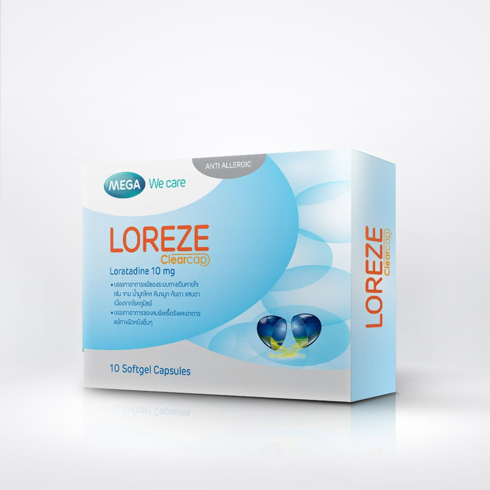
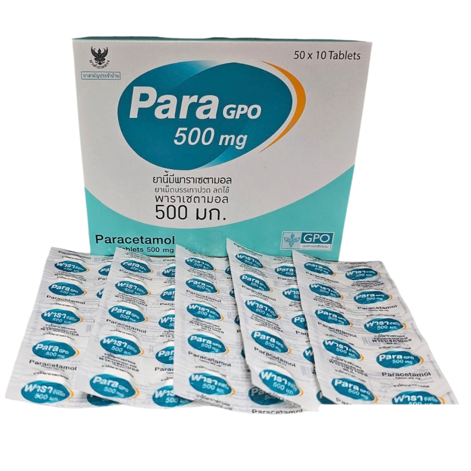
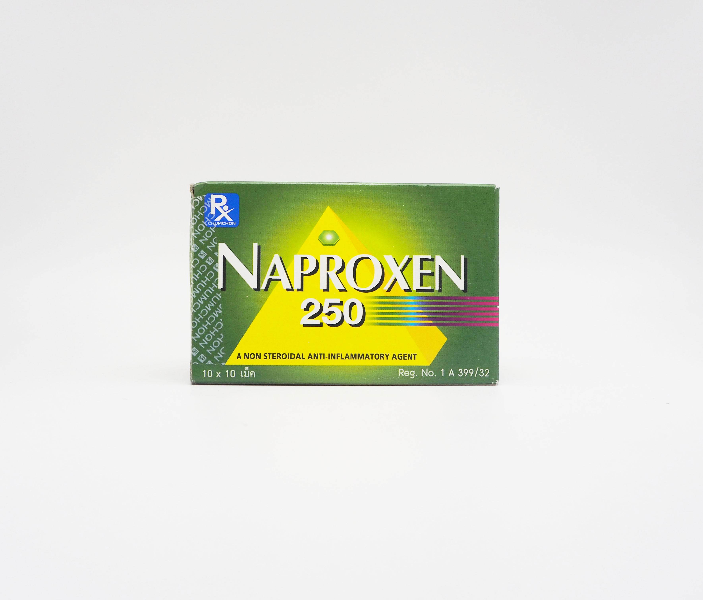
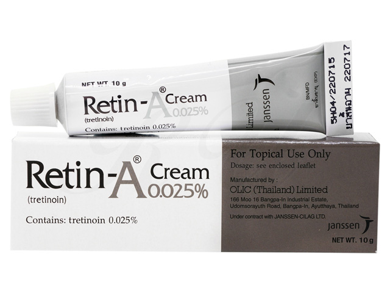

Does finasteride really work?
Finasteride is a once-daily tablet that lowers the hormone linked to male-pattern hair loss. Most people notice results after 3-6 months of consistent use.
This article is for education only and isn't a substitute for a consultation. Talk to a Krane doctor about what's right for you.
What are you noticing right now?
Tell us more about this concern
What have you tried for this concern?
Do any urgent warning signs apply today?
If symptoms are severe or life-threatening, seek emergency care now.
Add a photo of the area you're concerned about
-
 แนวไรผมด้านหน้า
แนวไรผมด้านหน้า
-
 กลางศีรษะ
กลางศีรษะ
-
 ขม่อมด้านหลัง
ขม่อมด้านหลัง
-
 ด้านข้างและขมับ
ด้านข้างและขมับ
ภาพด้านบนเป็นตัวอย่างมุมถ่าย · ถ่ายในที่แสงสว่าง ผมแห้ง ไม่สวมหมวก และถอดที่คาดผมออก ถ้าถ่ายซ้ำเพื่อติดตามผล ให้ใช้มุมและระยะเดิมทุกครั้ง
ยังไม่มีรูปที่เพิ่ม แตะด้านบนเพื่อถ่ายหรือเลือกรูป
อาการที่ต้องการปรึกษา
กรอกรายละเอียดอาการ ระยะเวลา และสิ่งที่ลองทำแล้ว เพื่อช่วยให้แพทย์ประเมินได้แม่นยำขึ้น
ข้อมูลสุขภาพทั่วไป
ตรวจสอบและอัปเดตข้อมูลนี้ก่อนพบแพทย์ทุกครั้ง เพื่อให้แพทย์เห็นข้อมูลล่าสุดของคุณ
Factors like aging, family history and stress can drive hair shedding and thinning.
The good news: doctor-led treatment can target those causes, so many men see visibly thicker, fuller hair in 3 to 6 months.
You need in-person care
Your answers point to something online care cannot treat safely.
Create your secure care account
We'll text a one-time code (OTP). No password needed.
Welcome back
Let’s get you logged in.
You’re signed in
ยืนยันชื่อและเบอร์โทรศัพท์
สิทธิ์ประกันที่เลือก
ซักประวัติเรียบร้อยแล้ว
รอสักครู่ krane กำลังค้นหาคุณหมอที่เหมาะให้คำปรึกษาในอาการของคุณ
ขณะนี้ไม่มีแพทย์ว่างสำหรับเรื่องนี้ เลือกวันและเวลาที่คุณสะดวก
เวลาที่จางคือมีคนจองแล้ว
จองเวลาปรึกษาแล้ว
เราจะเตือนคุณก่อนถึงเวลานัด
หากปรึกษาหลัง 21:00 น. อาจจะได้รับยาในวันถัดไป
นี่คือค่าปรึกษาแพทย์เท่านั้น ค่ายาและค่าจัดส่งจะชำระแยกหลังพบแพทย์และได้รับใบสั่งยา
Consultation payment failed
No charge was made. Your booking is saved.
ถึงคิวแล้ว!
กดเข้าห้องได้เลย คุณหมอนรินทร์ พร้อมเจอคุณแล้ว
เปิดกล้องและไมค์ก่อนเข้าห้อง หรือสลับเป็นแชทได้



Turning your camera off keeps the call on voice. End hangs up.
เมื่อยอมรับแล้ว การปรึกษาจะสิ้นสุด และคุณหมอนรินทร์ จะออกใบสั่งยาให้ ถ้ายังอยากแก้ไขรายการยา แจ้งในแชทได้ก่อน
คุณหมอนรินทร์ ยังอยู่ในห้อง ถ้าวางสายแล้วยังคุยต่อทางแชทได้
กำลังสรุปแผนการรักษา
คุณหมอนรินทร์ กำลังเขียนผลวินิจฉัยและรายการยาให้คุณ
ผู้รับพัสดุ
ที่อยู่จัดส่ง
รายละเอียดสำหรับไรเดอร์ (ไม่บังคับ)
ยังไม่ได้เลือกตำแหน่ง เลื่อนแผนที่เพื่อปักหมุด แล้วเรากรอกที่อยู่ให้อัตโนมัติ
กำลังคำนวณการจัดส่ง
ตรวจสอบพื้นที่และค่าจัดส่งโดยประมาณ ก่อนส่งรายการให้ร้านยายืนยัน
Pharmacist reviewing your order
Confirming the prescription, the stock and the final price.
ร้านยายืนยันใบสั่งยา สต็อก และราคาสุทธิแล้วก่อนชำระเงิน
฿ 0Diagnosis and medicines are ready
Payment is complete. You can now view your diagnosis, medicines, medical certificate and receipt.
We will check your entitlement automatically the next time you have an order.
Payment failed
No charge was made. Your treatment plan and the pharmacy's confirmed quote are saved.
เภสัชกำลังจัดยา
เภสัชกรกำลังจัดยาตามใบสั่งแพทย์ของคุณ
ไม่มีร้านที่ส่งได้ภายในวัน
เปลี่ยนเป็นการจัดส่งมาตรฐานก่อนชำระเงิน ระบบจะคำนวณยอดใหม่ให้ทันที
Your feedback is private and helps us improve care quality.
Thank you
Your feedback was submitted.
เลือกรายการที่ต้องการเติมยา

Tretinoin 0.025%Expired 2 Jul 2026 · needs a new consultOnly prescriptions that have not expired can be refilled, and never more than your doctor approved. Need a change? Start a new consultation.
กลับเข้าสู่การดูแลได้ทันที
คุณหมอนรินทร์ ดูแลทุกเคสของคุณ · ต้องการเปลี่ยนแพทย์ ทักแอดมินที่ LINE @kraneclinic หรือ care@krane.clinic
ผมร่วง
ภาวะผมร่วงที่ตอบสนองต่อแผนการรักษา
รับประทานยาตามแผน บันทึกอาการและผลข้างเคียง และติดตามผลกับคุณหมอนรินทร์ตามนัด
ผมร่วง
Hair loss treatment
Early-stage hereditary hair loss with thinning around the frontal hairline.
No active orders
Orders and delivery updates will appear here.
No past treatments yet
Diagnoses and prescriptions will appear here after treatment.
ความเป็นส่วนตัวและการรักษาความลับ
เพื่อความสบายใจในการใช้บริการ
Required once for first-time sign-up. Your documents are encrypted and used only to verify it's you.
Enter the code
Didn't get it? Resend code · sent via SMS
ผมบางบริเวณกลางศีรษะ สังเกตมาประมาณ 6 เดือน ไม่เคยรักษามาก่อน
เข้าได้กับภาวะผมร่วงจากพันธุกรรม (Androgenetic alopecia) ระยะเริ่มต้น ไม่พบสัญญาณที่ต้องส่งตรวจเพิ่มเติมในขณะนี้
ผู้รับการตรวจได้เข้ารับการปรึกษาแพทย์ทางไกลกับสถานพยาบาลในวันและเวลาข้างต้นจริง แพทย์ได้ประเมินอาการและวางแผนการรักษา พร้อมนัดติดตามอาการตามแผน
ใบรับรองนี้ออกให้เพื่อใช้ตามวัตถุประสงค์ที่ระบุ และตรวจสอบความถูกต้องได้ด้วยเลขที่ใบรับรอง
Order with your own prescription
Give ฿150, get ฿150
ถ่ายบัตรประชาชน
เราจะดึงชื่อจากบัตรมากรอกให้ในหน้าถัดไป ตรวจสอบและแก้ไขได้ก่อนยืนยัน
ยังไม่มีรูปบัตร แตะด้านบนเพื่อถ่ายหรือเลือกรูป
แก้ไขได้ในหน้าถัดไป
ยืนยันชื่อและเบอร์โทรศัพท์
ตรวจสอบสิทธิ์ประกันแล้ว
ยืนยันข้อมูลกับพยาบาล
ยืนยันบันทึกสุขภาพ
Preparing your information
This may take a moment.
คุณยังมีเคสที่กำลังดำเนินการ
คุณมีเคสที่ยังรอการดำเนินการอยู่ เพื่อไม่ให้ข้อมูลการรักษาซ้ำกัน กรุณากลับไปดูเคสเดิมก่อนเริ่มเรื่องใหม่
ยืนยันข้อมูลความปลอดภัย
สามข้อนี้จำเป็นต่อความปลอดภัยในการสั่งยา แพทย์จะเห็นก่อนเริ่มปรึกษา
สมัครสมาชิกสำเร็จ
ยืนยันเบอร์โทรศัพท์และสร้างบัญชี Krane ของคุณเรียบร้อยแล้ว ขั้นตอนต่อไปคือกรอกข้อมูลผู้รับบริการ
คุณไม่ได้เข้าห้องปรึกษาในเวลาที่กำหนด
คิวของคุณกับคุณหมอนรินทร์ถูกปล่อยไปแล้ว จับคู่แพทย์ใหม่ได้ทันที ข้อมูลแบบสอบถามของคุณยังอยู่ครบ
ให้คะแนนการปรึกษาครั้งนี้
คำตอบเป็นความลับ
เลือกวิธีชำระเงิน
เลือกช่องทางที่ต้องการใช้สำหรับคำสั่งซื้อนี้
โค้ดส่วนลด
เลือกโค้ดที่มีอยู่ หรือกรอกโค้ดของคุณเอง